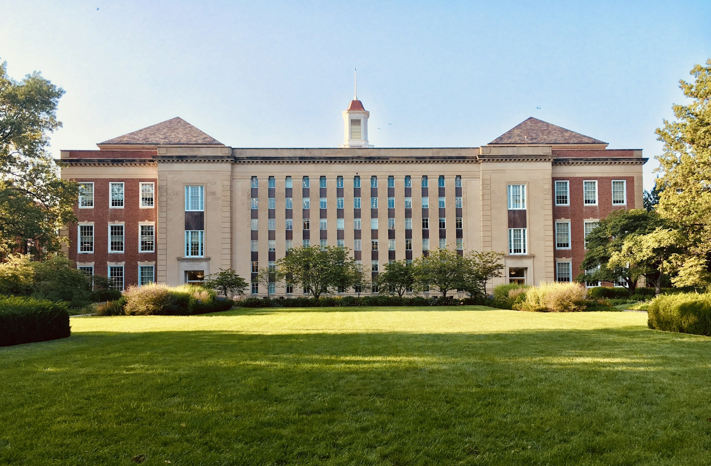

LEADING WITH EMPATHY
CLASS OF 2008
Dr. Nadia Chen
Chief Medical Officer · Meridian Health
“Crestfield gave me the foundation to think critically and lead with empathy.”

45,000+ graduates. One powerful network.
Stay connected, give back, and keep growing.
*Illustrative statistics, affiliations and stories from the brief. Stock imagery represents neither an actual Crestfield campus nor the fictional alumni.
Chief Medical Officer · Meridian Health
“Crestfield gave me the foundation to think critically and lead with empathy.”
Founder & CEO · GreenLoop Technologies
“The connections I made here still drive my business today.”
Senior Data Scientist · NASA JPL*
“My professors didn’t just teach. They mentored. That changed everything.”
*Fictional employer/role association, not a NASA or other organization endorsement.
A familiar face. A fresh perspective. A reason to come back. Find your next Crestfield moment.
2026 archive
These original dates have passed. Explore event details and download archived calendar entries; registration is closed.
Log in to your alumni account to view full profiles and connect. This concept has no real authentication.
Your first interview. Your first big decision. A generous conversation can change what comes next. Share your experience with a student or recent graduate.
*Illustrative program metrics, not verified participation.
My mentor helped me land my first job. Now I’m mentoring three students myself.KAI TORRES ’20 · FICTIONAL STORY
A scholarship. A discovery. A place to belong.
Your generosity creates a little more possibility.
Every gift creates room for someone to thrive.
of $3,000,000 illustrative goal
A chance to ask the next big question.
More space for every kind of discovery.
Help the next generation find their team.
Local giving previews only. No card details collected, payment processed, receipt issued or tax deduction claimed.
Illustrative chapter names and member counts. Local join requests do not create a membership.
Concept story: Crestfield ranked #28 in national university rankings.
Concept story: a new career services portal for all alumni.
Concept story: an alumni entrepreneur earns a Forbes 30 Under 30 mention.
Fictional news and rankings; no actual Forbes recognition, ranking or endorsement is asserted.
Create your alumni account to reconnect, get involved and make the most of belonging.
Local interest preview. No account or email is created.